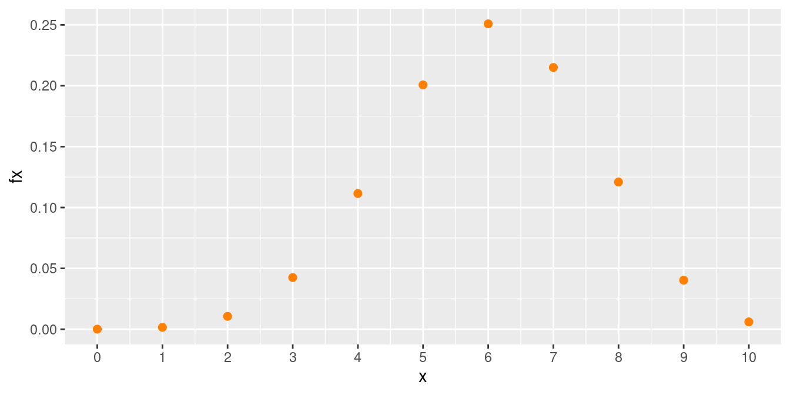
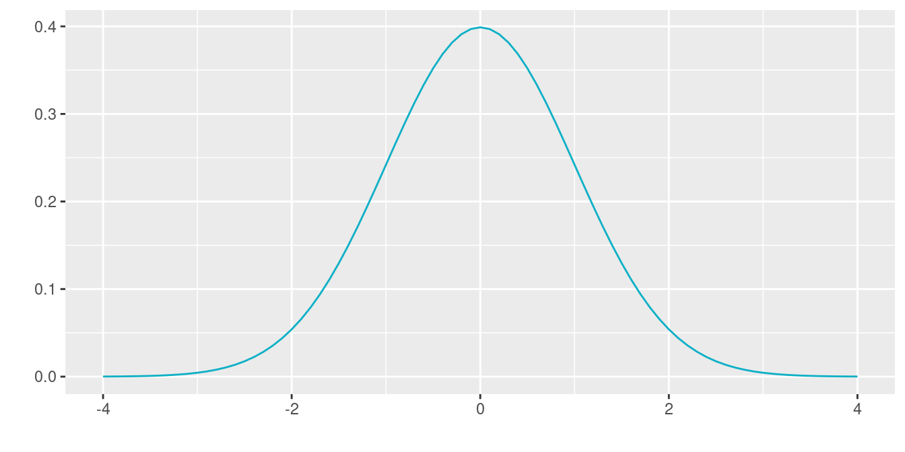

Tomada de: https://pixabay.com/
El concepto de variable aleatoria constituye uno de los conceptos principales de la probabilidad y estadística. A este concepto se pueden asociar dos paradigmas de evolución histórica según J.A. Alberth & B. Ruiz (2013). El primero basado en el resultado de fenómenos aleatorios y el segundo, el proceso que relaciona los conjuntos de espacio muestral y sus respectivas probabilidades, para definir el concepto de variable aleatoria como función de números reales y el espacio para el sustento matemático.
Una variable aleatoria \(X\) es una función que asigna a cada valor de un espacio muestral \(S\) un número. El conjunto formado por estos números conforman un subconjunto de los reales llamado rango de la variable X, (\(R_{_{X}}\))
Las variables aleatorias se clasifican teniendo en cuenta las características de su rango en DISCRETAS o CONTINUAS. La distribución de una variable aleatoria será UNIVARIADA si se estudia el comportamiento de una sola variable y será MULTIVARIADA si se considera el comportamiento en conjunto de varias variables definidas sobre el mismo espacio muestral.
Ahora una variable \(X\) se considera DISCRETA si su rango \(R_{_{X}}\) es un conjunto finito o infinito numerable de valores, por lo general procede del conteo y en la gran mayoria de casos empieza por número de…
Se considera variable aleatoria CONTINUA si su rango \(R_{_{X}}\) es un conjunto de valores infinito no numerable y generalmente corresponde a unión de intervalos. Están asociadas con la medición como son el tiempo, edad, precio, altura, distancia….
En todos los casos se caracterizan por
entre otras
Esta función que asigna a cada valor de probabilidad \(f(x)\)
| Caso discreto | Caso continuo |
| Para el caso de discreto se denomina función de distribución de probabilidad \(f(x) = P(X = x)\) y debe cumplir las condiciones: | Para el caso continuo se denomina función de densidad de probabilidad |
| \(f(x) = P(X=x) \geq 0\) | \(f(x) \geq 0\) |
| \(\displaystyle\sum_{R_X} f(x) = 1\) | \(\displaystyle\int\limits_{-\infty}^{+\infty}f(x)\:dx =1\) |
| \(P(a < X < b)=\displaystyle\int\limits_{a}^{b}f(x)\:dx\) |
Corresponde a la probabilidad acumulada para valores menores o iguales a un valor \(x\)
| Caso discreto | Caso continuo |
| \(F(x)=P(X\leq x) = \sum _{t \leq x}f(t)\) | \(F_{_X}(x) = P(X \leq x)=\displaystyle\int \limits_{-\infty}^{x}f_{_X}(t)\:dt\) |
La esperanza matemática de una variable aleatoria X, corresponde a un valor que representa el valor más probable que ocurra o la media población de la variable aleatoria denotada por \(E[x]\) o también \(\mu\).
| Caso discreto | Caso continuo |
| \(E(X) = \displaystyle\sum\limits_{x}^{}x_{i}f(x_{i})\) | \(E(X) = \displaystyle\int\limits_{-\infty}^{+\infty}x f(x)dx\) |
\(E(k) = k\), para todo numero real \(k\).
\(E(kX) = k E(X)\), para todo número real \(k\).
\(E(aX + b) = a E(X) + b\), para todo par de números \(a\) y \(b\)
\(E(aX + bY) = a E (X) + b E(Y)\)
\(E(XY) = E(X)E(Y)\), únicamente en el caso de ser \(X\) e \(Y\) variables aleatorias independientes
Sea \(X\) una variable aleatoria discreta o continua. El momento de orden \(k\) se define como:
| Caso discreto | Caso continuo |
| \(E(X^{k}) = \displaystyle\sum\limits_{x}^{}x_{i}^{k}f(x_{i})\) | \(E(X^{k}) = \displaystyle\int\limits_{-\infty}^{+\infty}x^{k} f(x)dx\) |
Se define la varianza como la diferencia entre el segundo momento y el cuadrado del primer momento
\(V[X] = E[X^{2}]-(E[X])^{2} = E[X^{2}]-\mu^{2}\)
\(V[X] \geq 0\)
\(V[k] = 0\), para todo número real \(k\)
\(V[X + k] = V[X]\), para todo número real \(k\)
\(V[kX] = k^{2}V[X]\), para todo número real \(k\)
\(V[aX + bY] = a^{2}V[X] + b^{2}V[Y] + 2ab \hspace{.2cm}Cov[XY]\), siendo \(a\) y \(b\) números reales. En el caso de ser \(X\) y \(Y\) variables aleatorias independientes la igualdad será: \(V[aX + bY] = a^{2}V[X] + b^{2}V[Y]\)
| Discretos | |||||
| Bernoulli | Binomial | Poisson | Hipergeométrico | Geométrico | Binomial negativo |
| Continuos | |||||
| Uniforme | Normal | Exponencial | Gamma | Weibull | Cauchy |
| Lognormal | Beta | Erlang | Gumbel | Kernel | |
| t-Student | F de Fisher | Ji-cuadrado | |||
En \(R\) los nombre de las funciones diseñadas para los cálculos requeridos están conformadas por dos partes:
La primera parte es una letra que identifica el propósito de la
función.
d : función de distribución de probabilidad \(f(x)= P(X=x)\), para el caso discreto. En el caso de las variables continuas representa la función de densidad de probabilidad \(f(x)\)
p : función de probabilidad acumulada \(F(x) = P(X \leq x)\)
q : percentil \(X_p\)
r : generador de números aleatorios
La siguiene tabla presenta estas las funciones para los principales modelos tanto discretos como continuos
| modelo | \(F(x)\) | \(X_{p}\) | \(f(x)\) | aleatorio |
|---|---|---|---|---|
| discretos | ||||
| binomial | pbinom | qbinom | dbinom | rbinom |
| gometrico | pgeom | qgeom | dgeom | rgeom |
| hipergeometrico | phyper | qhyper | dhyper | rhyper |
| Poisson | ppois | qpois | dpois | rpois |
| binomial negativo | pnbinom | qnbinom | dnbionom | rnbinom |
| continuos | ||||
| normal | pnorm | qnorm | dnorm | rnorm |
| beta | pbeta | qbeta | dbeta | rbeta |
| Cauchy | pcauchy | qcauchy | dcauchy | rcauchy |
| exponencial | pexp | qexp | dexp | rexp |
| gamma | pgamma | qgamma | dgamma | rgamma |
| lognormal | plnorm | qlnorm | dlnorm | rlnorm |
| uniforme | punif | qunif | dunif | runif |
| Weibull | pweibull | qweibull | dweibull | rweibull |
| t-Student | pt | qt | dt | rt |
| Ji-cuadrado | pchisq | qchisq | dchisq | rchisq |
| F | pf | qf | df | rf |
En R los nombres de las funciones diseñadas para los cálculos requeridos están conformadas por dos partes: la primera parte con el propósito de la función (primera letra) y la segunda parte hace referencia al modelo a utilizar (d binom para el cálculo de probabilidad de una variable aleatoria con distribución binomial)
En cada caso si no recuerda las sintaxis de la función puede hacer uso de las ayudas de R así:
| p | función de distribución acumulada \(F(x)\) |
| q | percentil |
| d | densidad de probabilidad \(P(X=x)\) |
| r | variable aleatoria |
Una variable que se distrbuye binomial es la que procede de un experimento bionomial que se puede describir de la siguiente forma:
Función de distribución de probabilidad
\[\begin{equation*} f(x)=\left\lbrace \begin{array}{lll} \displaystyle\binom{n}{x} p^{x} (1-p)^{n-x} &,& x=0,1,2, \ldots, n \\ &&\\ 0 &,& \mbox{en otro caso} \end{array} \right. \end{equation*}\]
Valor esperado
\[E[X]=np\]
Varianza
\[V[X]= np(1-p) \]
Sea la variable \(X \sim binom(n=10, p=0.60)\)
library(ggplot2)
Attaching package: 'ggplot2'The following object is masked from 'package:NLP':
annotate# modelo binomial ok
x=0:10
fx=dbinom(x,10,0.60)
dat=data.frame(x,fx)
ggplot(dat) + geom_point(aes(x, fx),colour = "#FF7F00", size = 2) +
scale_x_continuous(limits = c(0, 10),
breaks = c(0,1,2,3,4,5,6,7,8,9,10),
labels = c('0','1','2','3','4','5','6','7','8','9','10'))
Para calcular la probabidad de obtener exactamente 7 exitos, se evalua en la función de distribución del modelo binomial
\[ f(x) = P(X=7) = \dbinom{10}{7} 0.60^{7}
(1-0.60)^{(10-7)}\]
En R este calculo se obtiene con la función dbinom()
dbinom(7, 10, 0.60)[1] 0.2149908En caso de requerir la probabilidad acumulada para los valores mejores o iguales a 7 (0,1,2,3,4,5,6,7) , se evalua para cada caso el valor correspondiente en la función de distribución binomial y los resultados se suman para obtener el valor total.
\[F(x) = P(X \leq 7) =
\displaystyle\sum_{x=0}^{x=7} \dbinom{10}{x} 0.60^{x}
(1-0.60)^{(10-x)}\]
En R este valor se obtiene mendiante la función
pbinom()
pbinom(7, 10, 0.60)[1] 0.8327102La distribución normal es uno de los modelos más utilizados en las aplicaciones de la Estadística. Estas aplicaciones están relacionadas con:
Usos de la distribución normal
La mayoría de variables en la naturaleza, se distribuyen aproximadamente de manera normal
A partir de la distribución normal se originan las distribuciones \(t-student\), \(\chi^{2}\) y \(F\)-Fisher, utilizadas en inferencia estadística
En general la media muestral de variables que no tienen distribución normal, tiende a aproximarse a una distribución normal, a medida que el tamaño de muestra aumenta. (Teorema del Límite Central)
La regla empírica establece que:
Aproximadamente el 68% de la población se encuentra en el intervalo centrado \[(\mu - \sigma ; \mu + \sigma)\]
Aproximadamente el 95% de la población se encuentra en el intervalo centrado \[(\mu - 2\sigma ; \mu + 2\sigma)\]
Aproximadamente el 99.7% de la población se encuentra en el intervalo centrado \[(\mu - 3\sigma ; \mu + 3\sigma)\]
Su distribución fué planteada por el matemático francés del siglo 18, Abraham de Moivre, quien a partir de la distribución Binomial, con \(n=2\) empezó a aumentar su tamaño hasta observar que se formaba una distribución en forma de campana. Este mismo comportamiento fué detectado por Galileo en el siglo 17, al observar los errores producto de sus mediciones en astronomía. El modelo como se conoce actualmente fue propuesto de manera simultánea por los cientificos Robert Adrain y Carl Friedrich Gauss, quien finalmente le dió el nombre.
Función de densidad de probabilidad
\[f(x)= \dfrac{1}{\sqrt{2\pi \sigma^{2}}} \hspace{.1cm} \exp{\Bigg\{-\Bigg(\frac{1}{2\sigma^{2}}(x-\mu)^{2}\Bigg)}\Bigg\} \hspace{.5cm} -\infty \leq x \leq \infty \]
Valor esperado
\[E[X]=\mu\]
Varianza
\[V[X]=\sigma^{2}\]
Nornal estandar : \(X \sim N(0,1)\)
Un caso especial lo constituye la distribución normal con media cero y varianza uno - normal estandar -
# Distribucion normal
library(ggfortify)
p=ggdistribution(dnorm, seq(-4, 4, 0.1), mean = 0, sd = 1,colour = "#0EB0C6")
#p=ggdistribution(dnorm, seq(-4, 8, 0.1), mean = 0, sd = 1.5,colour = "#686868", p=p)
#ggdistribution(dnorm, seq(-4, 8, 0.1), mean = 2, sd = 1.5,colour = "#FF7F00", p=p)
p
Ahora supongamos que se tiene una variable continua con distribución normal, con media 50 y varianza 100, es decir desviación estándar 10, lo cual se puede representar como \(X\sim N(120,100)\). En este caso vamos a hallar los siguientes valores:
library(ggfortify)
ggdistribution(dnorm, seq(30, 210, 0.1), mean = 120, sd = 20,fill = "#0EB0C6")En este caso si se requiere calcular la probabilidad de obtener valores menores o iguales a 70 ( \(F(100)\)), dado que esta probabilidad corresponde a un área bajo la curva de la función delimitada por 70 que se obtiene mediante la integral de \(f(x)\).
\[P(X \leq 100) = F(100) =\displaystyle\int_{-\infty}^{100} \dfrac{1}{\sqrt{800 \pi }} \exp\Big\{-\frac{1}{800 }(x-120)^{2}\Big\} \:dx\]
En R se utiliza la función pnorm() para realizar este
calculo
pnorm(100,120,20)[1] 0.1586553En el caso de requerir la probabilidad de obtener un valor superior a 70, se requiere calcular la integral desde 70 a mas infinito
\[P(X>100) =\displaystyle\int_{100}^{\infty} \dfrac{1}{\sqrt{800 \pi }} \exp\Big\{-\frac{1}{800 }(x-120)^{2}\Big\} \:dx\]
En R esta probabilidad se puede obtener con la funcion
pnorm() de dos formas
pnorm(100,120,20,lower.tail=FALSE)[1] 0.84134471-pnorm(100,120, 20)[1] 0.8413447Una de las herramientas que nos permite la validación de propidedades y teoremas, además de realizar procedimenientos estadisticos de manera sintetica, es la simulación.
Este procedimiento consiste en generar de manera artificial valores asociados auna distribución de probabilidad.
El número de articulos defectuosos encontrados en casas de 10 unidades se puede simular a partir del conocimiento de los parámetros n y p de una distribución binomial.
Supongamos que n=10 (número de unidades por paquete) y p=0.10 probabilidad de éxito, en este caso de encontrar un artículo defectuoso
Simulemos 100 valores que podrían corresponde al resultado de la revisión de 100 cajas
rbinom(100, 10, 0.10) [1] 1 1 2 0 0 0 0 1 0 4 0 1 1 0 1 3 1 0 2 0 2 0 1 0 1 3 1 2 2 2 2 1 0 1 1 1 2
[38] 1 2 1 2 2 1 1 3 1 0 0 0 3 1 2 1 0 0 1 0 1 1 1 2 2 2 0 1 0 0 1 1 0 1 2 0 2
[75] 1 0 3 2 0 1 1 0 1 1 0 2 2 3 0 0 2 0 0 1 0 1 1 0 1 0Para el caso de la distribició normal, simulemos el resultado de una prueba realizada por 100 estudiantes. Para ello se requiere conocer el valor de los parámetros asociados a ese modelo ( \(\mu\) y \(\sigma^2\) )
Para el caso supongamos que \(\mu = 120\) y \(\sigma = 20\)
# round() , función para redondear a cero cifras decimanes
round(rnorm(100,120,20),0) [1] 117 113 125 124 160 161 113 122 124 117 142 123 124 123 105 155 114 87
[19] 94 102 138 127 109 81 119 118 63 110 129 98 102 143 115 150 138 126
[37] 129 121 120 80 145 94 116 117 137 122 132 113 110 124 133 124 124 131
[55] 116 101 132 106 139 145 140 114 107 113 98 126 126 123 128 93 75 103
[73] 122 105 136 147 108 125 144 142 107 106 109 117 118 135 92 130 119 95
[91] 106 106 132 140 117 116 152 138 125 132